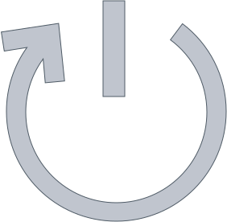

Reboot
GitHub Repo
This is my personal fork of Matthew Mueller's dots repo.
Installation
One-liner:
1 | (mkdir -p /tmp/dots && cd /tmp/dots && curl -L https://github.com/smargh/reboot/archive/master.tar.gz | tar zx --strip 1 && sh ./install.sh) |
Design
The goal of reboot is to automate the process of getting your operating system from a stock build to a fully functional machine.
Reboot should be the first thing you download and run to get your computer set up.
This library tries to be organized like a node application, while working within the constraints of bash.
Mac OS X
The OS X build does the following:
- install
homebrew - installs binaries (
graphicsmagick,python,sshfs,ack,git, etc.) - sets OS X defaults
- installs applications via
homebrew-cask(one-password, sublime-text, virtualbox, nv-alt, iterm2, etc.) - sets up the
~/.bash_profile - handle custom icons for applications
Credits
- Original project by Matthew Mueller